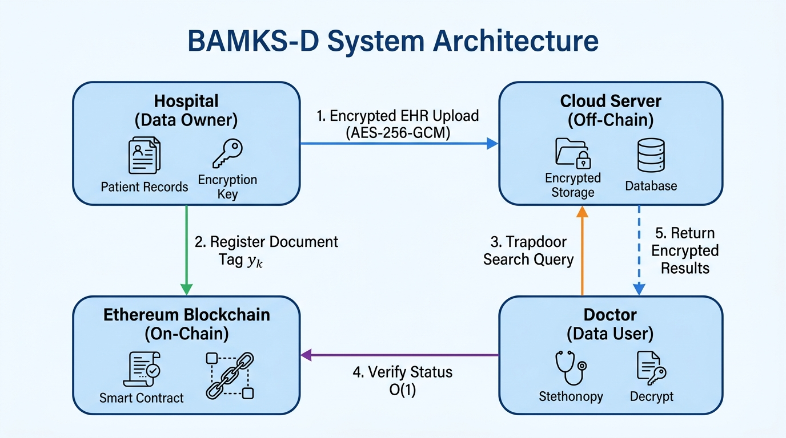
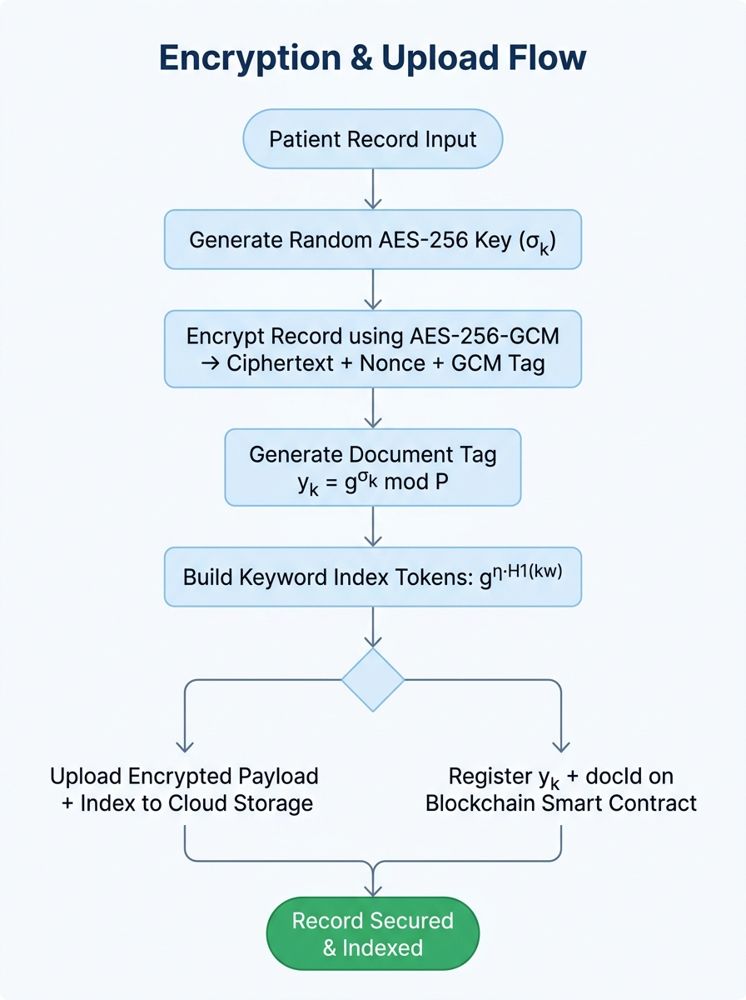
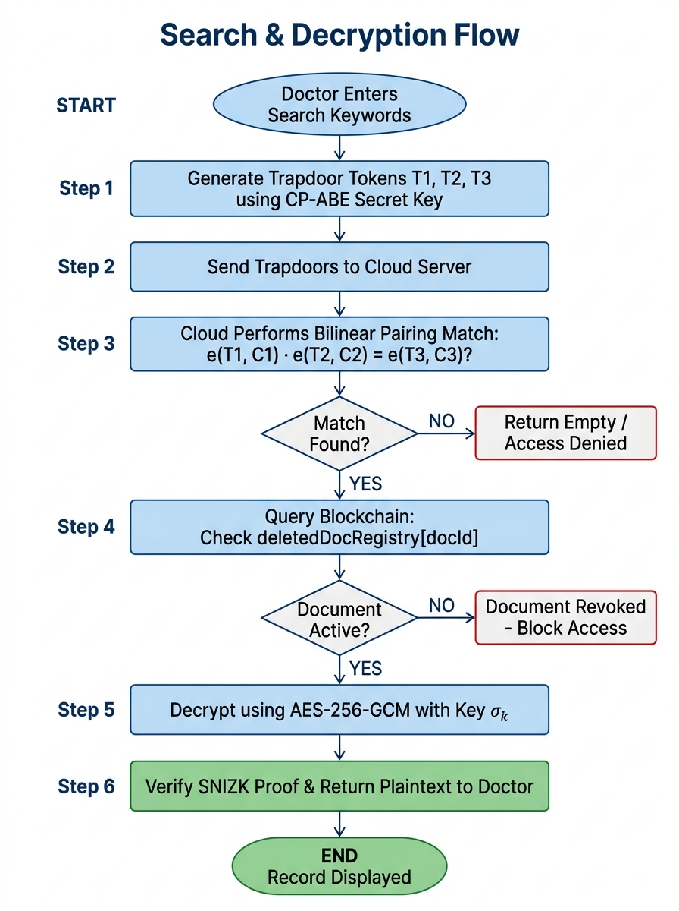
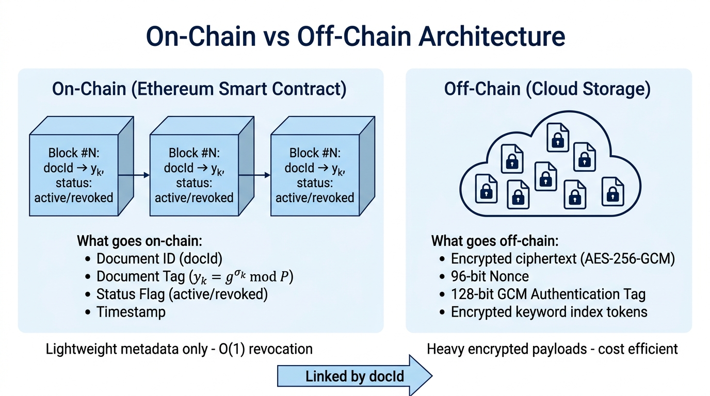
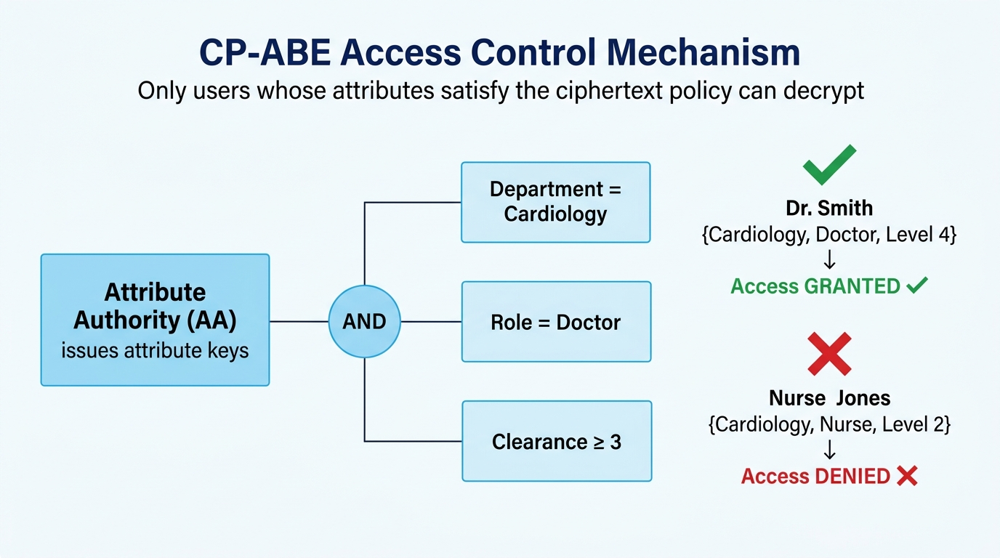
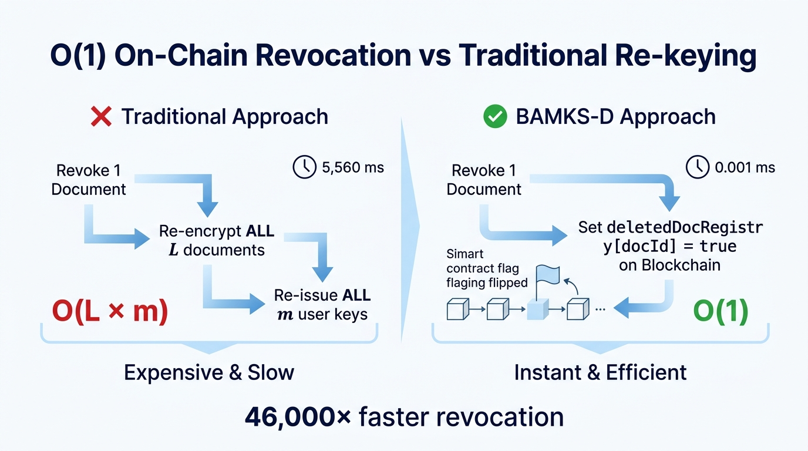
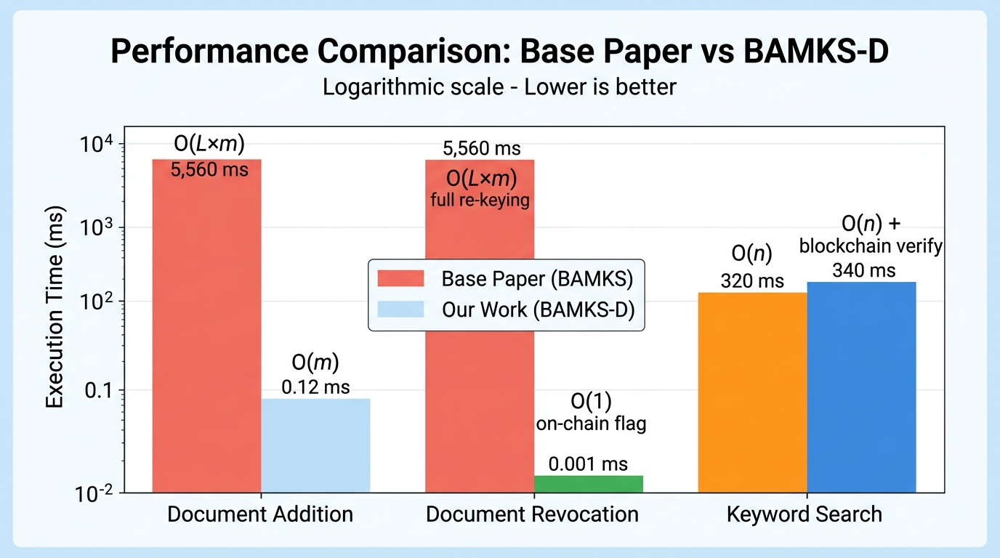
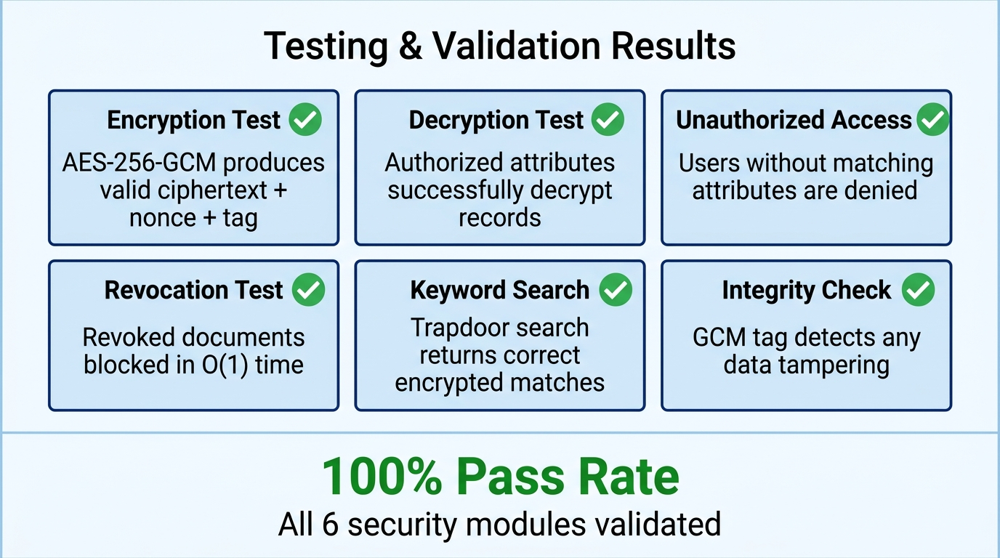

Blockchain-Assisted Multi-Keyword Searchable Encryption
with Dynamic Document Operations for Healthcare Cloud
Based on: Cheng et al., Elsevier Internet of Things, 2026
Technology Stack: AES-256-GCM · CP-ABE · Ethereum Smart Contracts · SNIZK Proofs
Design a secure, searchable, and dynamically updatable healthcare data management system that enables hospitals to encrypt and store patient records on the cloud while allowing authorized doctors to search and retrieve them — without the cloud server ever seeing plaintext data.

Four-entity architecture: Hospital (Data Owner), Cloud Server (Off-Chain), Ethereum Blockchain (On-Chain), Doctor (Data User)


Role: Symmetric encryption of EHR records
Why GCM? Provides both confidentiality AND integrity in one pass. The 128-bit GCM tag detects any tampering.
Role: Attribute-based access control
How: Ciphertext is bound to a policy (e.g., "Dept=Cardiology AND Role=Doctor"). Only users whose attributes satisfy the policy can decrypt.
Role: On-chain document registry & O(1) revocation
How: BAMKS_Registry.sol stores docId → yk mappings and deletedDocRegistry boolean flags.
Role: Multi-keyword searchable encryption
Uses Type-3 pairings on elliptic curves for conjunctive keyword matching over encrypted data.
Role: Data integrity verification
Succinct Non-Interactive Zero-Knowledge proofs verify that returned data hasn't been tampered without revealing the data itself.
Role: Efficient document lookup
Maps encrypted keyword tokens to document IDs, enabling O(n) search over n documents without scanning all records.

On-chain stores lightweight metadata (docId, tag, status); Off-chain stores heavy encrypted payloads — linked by docId

Policy tree enforces fine-grained access — only users with ALL required attributes can decrypt the ciphertext

BAMKS-D achieves 46,000× faster revocation by using on-chain boolean flags instead of expensive full re-keying
Add one document without rebuilding the entire index. Only m keyword tokens need to be generated for the new document.
Revoke a document by flipping a single boolean on the blockchain. No re-encryption, no key re-issue.
Cloud server never sees plaintext. AES-256-GCM encrypts data; CP-ABE controls who can decrypt.
Search across multiple keywords simultaneously using bilinear pairing-based trapdoors over encrypted data.
Every document operation is recorded on the Ethereum blockchain — creating an immutable audit trail.
Zero-knowledge proofs verify data hasn't been modified without revealing the data itself to the verifier.

| Operation | Base Paper | BAMKS-D |
|---|---|---|
| Document Addition | O(L×m) — 5,560 ms | O(m) — 0.12 ms |
| Document Revocation | O(L×m) — 5,560 ms | O(1) — 0.001 ms |
| Keyword Search | O(n) — 320 ms | O(n) + verify — 340 ms |
| Blockchain Audit | Not Available | Immutable Ledger |
| Access Control | Basic ACL | CP-ABE Policy |

Pass Rate
Security Modules
Vulnerabilities Found
Questions & Discussion
📖 Reference: Cheng et al., Internet of Things (Elsevier), 2026